주요 내용 Key Takeaways
Data Governance 확립
데이터 거버넌스 확립과 프로세스 최적화를 여는 주제로, 규제 요구를 조직의 운영 체계로 옮기는 방법을 다뤘습니다.
제조 · 품질 · IT 전략
제조와 품질 현장의 시간관리 전략, DI 강화를 위한 IT 전략, 분석 고도화와 신뢰성 확보 방안이 차례로 공유되었습니다.
Audit Trail 검토
Data Integrity 준수를 위한 Audit Trail의 효과적인 검토와 프로세스 최적화 전략을 실무 관점에서 정리했습니다.
현장 사례와 AI
제약사의 현장 중심 DI 사례와 GMP에서의 AI 활용 데모로, 이론에서 적용으로 이어지는 흐름을 보여 주었습니다.
프로그램 Program
| 시간 | 프로그램 | 연사 |
|---|---|---|
| 09:30 – 09:50 | 등록 | |
| 10:00 – 10:10 | 개회한국제약바이오협회 개회사 | |
| 10:10 – 10:30 | 오프닝Data Governance 확립 및 프로세스 최적화 | ㈜아이앤씨피 |
| 10:35 – 10:55 | Part 1제조 및 품질에서 필요한 시간관리 전략 | 바이넥스 |
| 11:00 – 11:30 | Part 2DI 강화를 위한 IT 전략 | DA인포메이션 |
| 11:30 – 12:50 | Lunch Break | |
| 12:50 – 13:20 | Part 3제약바이오의 분석 고도화와 신뢰성 확보 | JMP |
| 13:20 – 13:50 | Part 4Data Integrity 준수를 위한 Audit Trail의 효과적인 검토 · 프로세스 최적화 전략 | GAMP연구소 |
| 13:50 – 14:00 | Coffee Break | |
| 14:00 – 14:30 | Part 5현장 중심의 DI 사례 공유 | 대웅제약 |
| 14:30 – 14:50 | Part 6GMP에서의 AI 활용 — 데모 동영상 시연 | 엠써클 |
| 14:50 – 15:00 | 요약Update for Data Integrity (Summary) | ㈜아이앤씨피 |
주최 측 안내 자료 기준이며, 현장 사정에 따라 일부 변경되었을 수 있습니다.
현장 스케치 Photos
사진을 누르면 크게 볼 수 있습니다

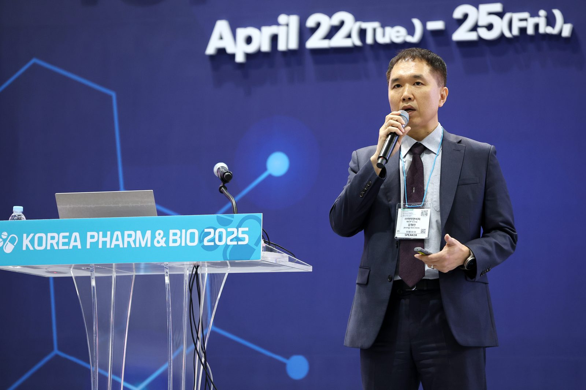

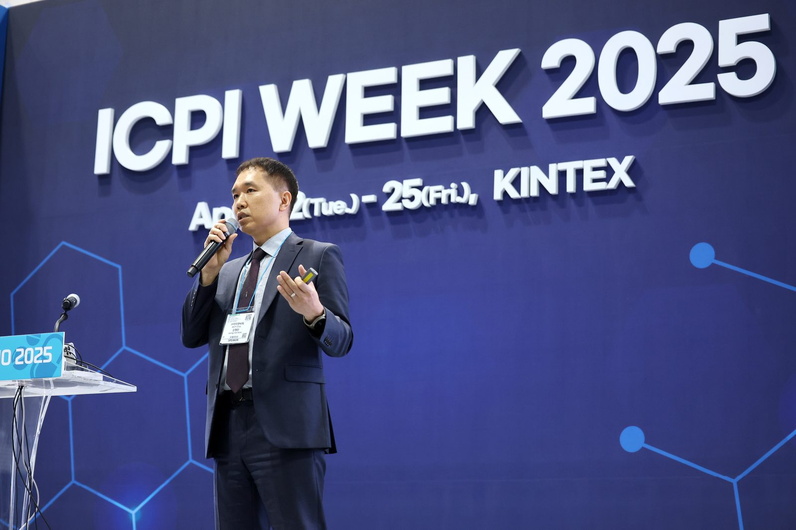

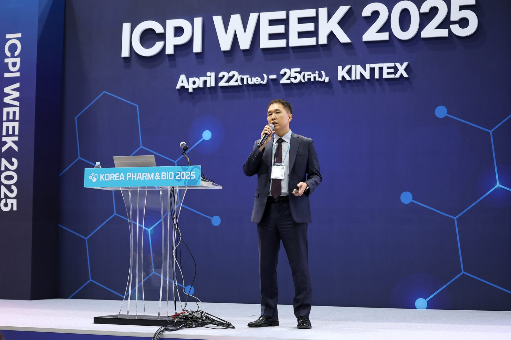

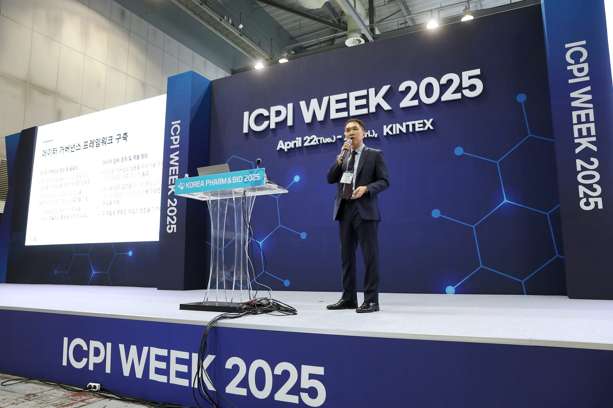

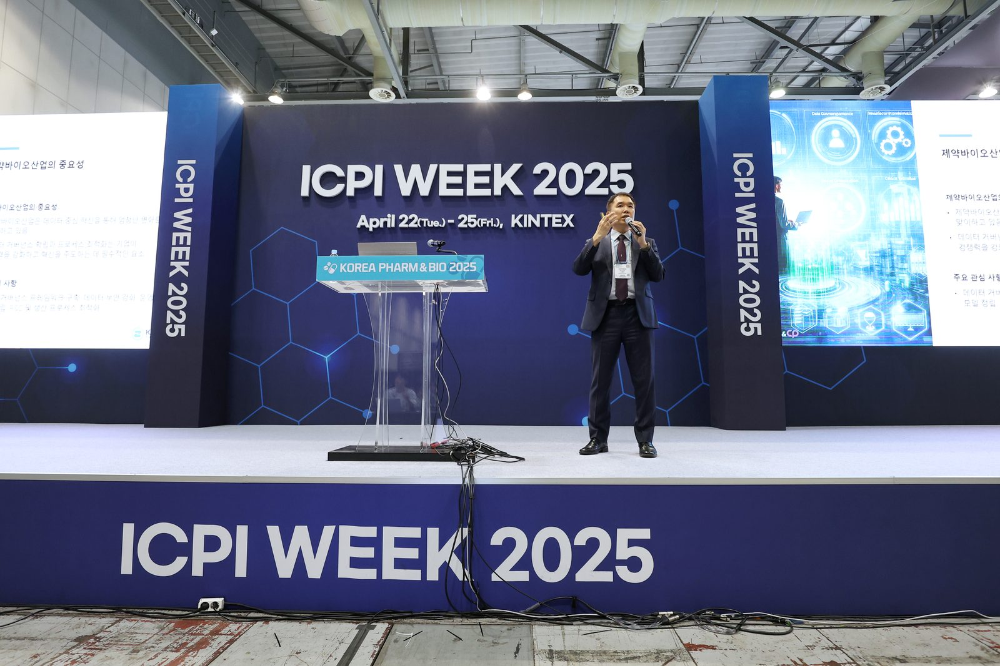

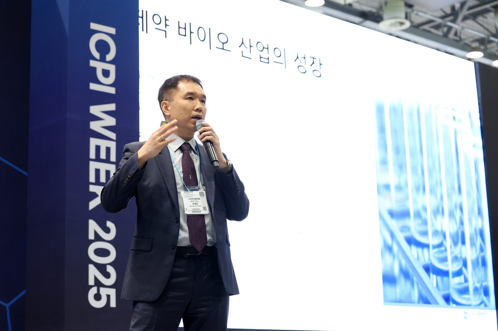

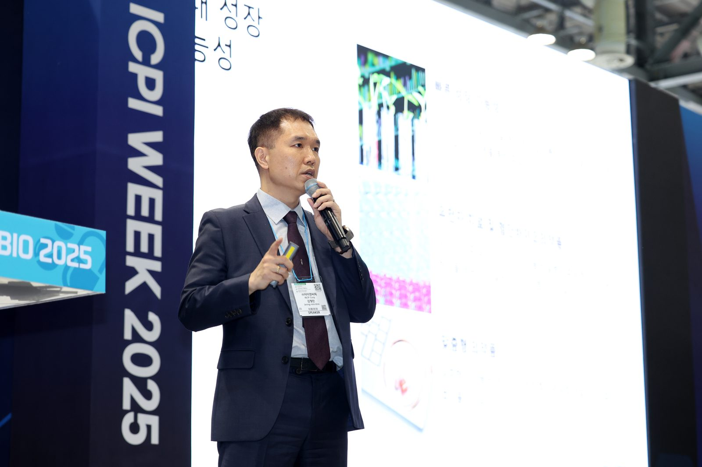

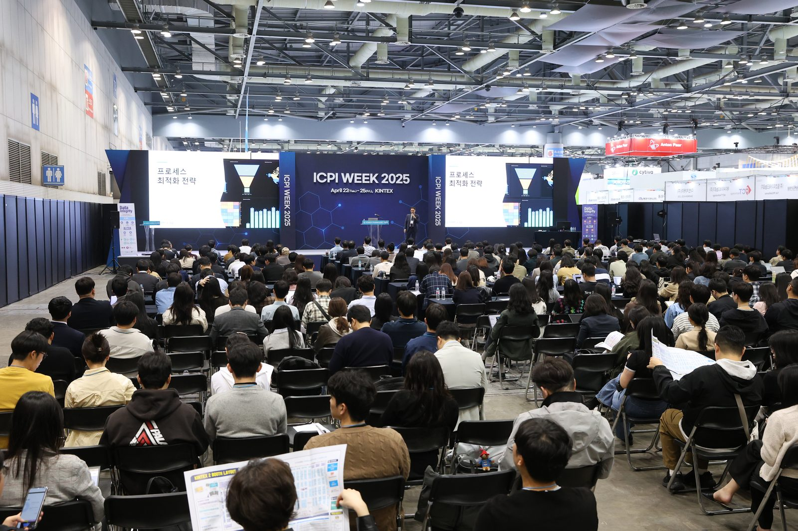

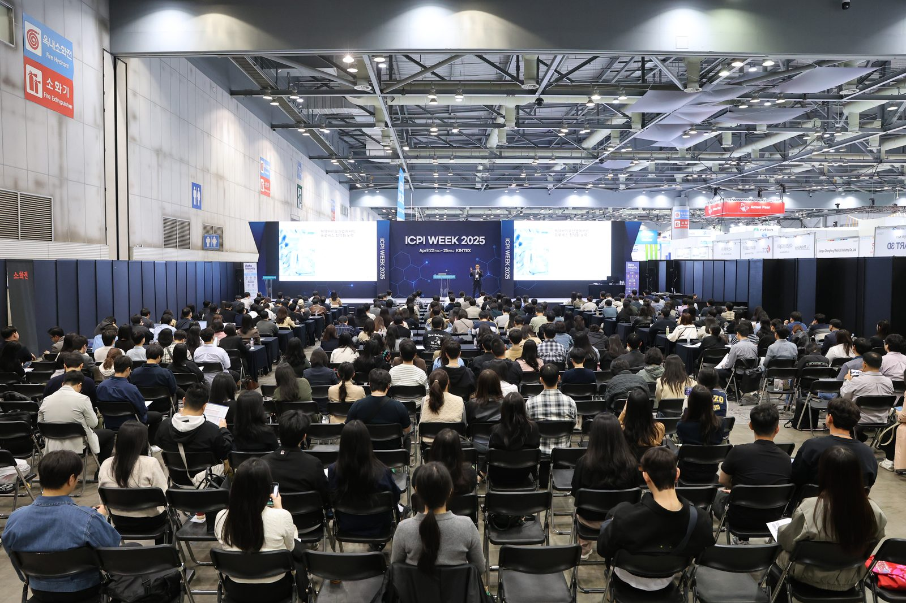

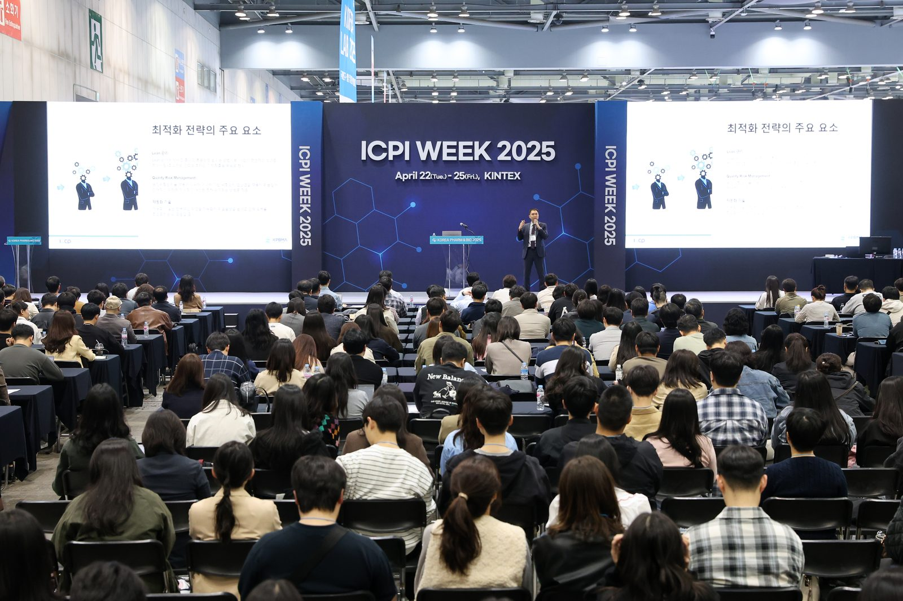

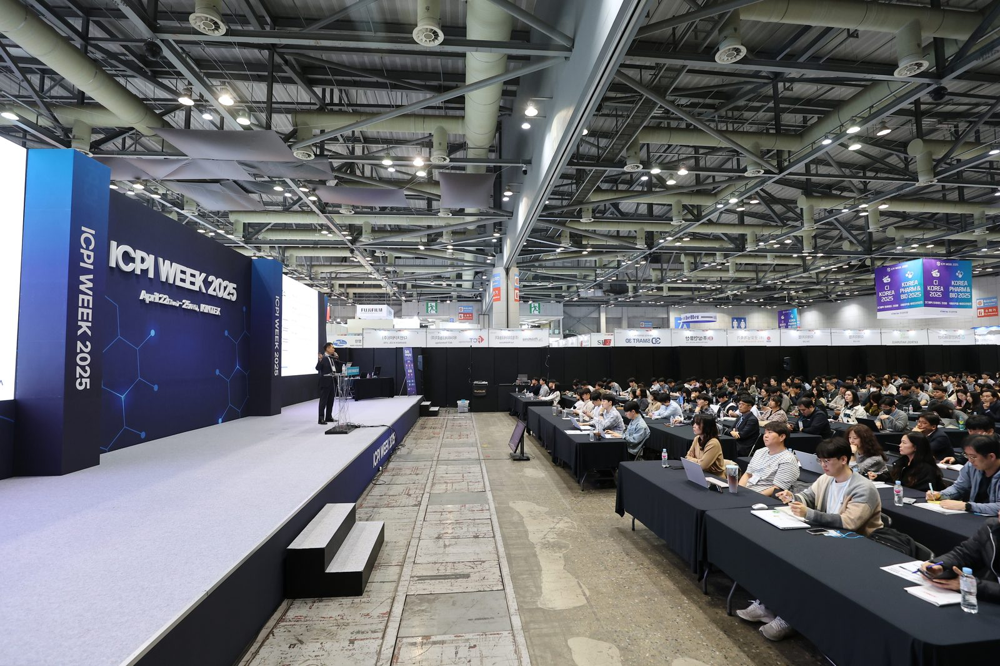
기록으로 보는 2025 Archive
행사 안내 · 프로그램
다른 회차 보기
전체 아카이브 →해석이 어려웠던 규정·가이드라인을 알려 주세요
규정이나 가이드라인을 읽다가 해석이 분명하지 않았던 부분이 있다면 incp@diforum.org로 보내 주세요. 10명 이상이 요청해 주신 주제는 특별판 뉴스레터로 다루겠습니다.